*****THE BACKGROUND HERE WILL LOOK LIKE THE TEXTURE OF THE FLAG
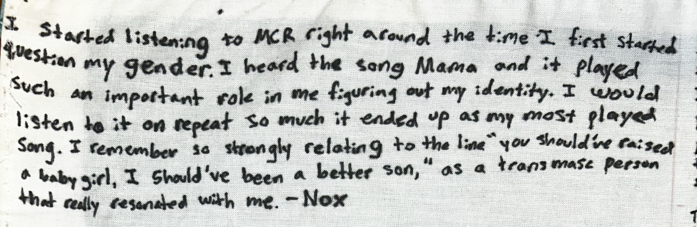
I started listening to MCR right around the time I first started questioning my gender. I heard the song Mama and it played such an important role in me figuring out my identity. I would listen to it on repeat so much it ended up as my most played song. I remember so strongly relating to the line “You should have raised a baby girl, I should've been a better son”, as a transmasc person that really resonated with me. -Nox
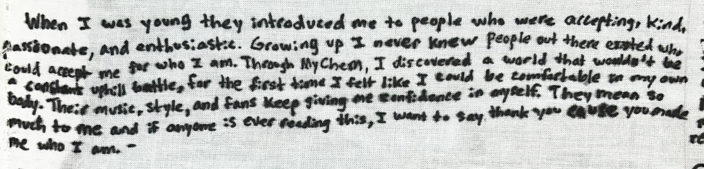
When I was young, they introduced me to people who were accepting, kind, passionate and enthusiastic. Growing up I never knew people out there existed who could accept me for who I am. Through My Chem, I discovered a world that wouldn’t be a constant uphill battle, for the first time I felt like I could be comfortable in my own body. Their music, style, and fans keep giving me confidence in myself. They mean so much to me and if anyone is ever reading this, I want to say thank you. ‘Cause you made me who I am.
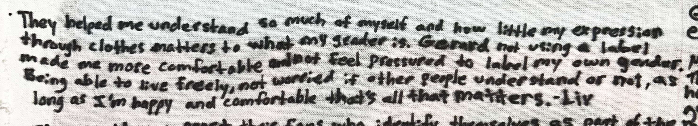
They helped me understand so much of myself and how little my expression through clothes matters to what my gender is. Gerard not using a label made me more comfortable and not feel pressured to label on my own gender. Being able to live freely, not worried if other people understand or not, as long as I'm happy and comfortable that's all that matters. -Liv
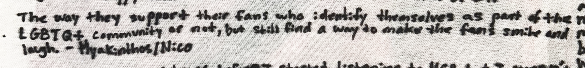
The way they support their fans who identify themselves as part of the LGBTQ+ community or not, but still find a way to make the fans smile and laugh. -Hyakinthos/Nico
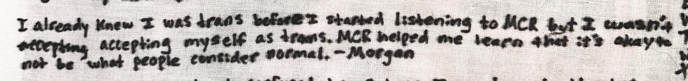
I already knew I was trans before I started listening to MCR but I wasn’t accepting myself as trans. MCR helped me learn that it’s okay to not be what people consider normal. -Morgan
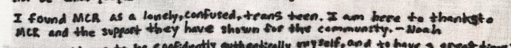
I found MCR as a lonely, confused, trans teen. I am here thanks to MCR and the support they have shown for the community. - Noah
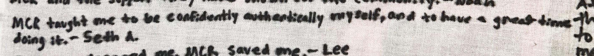
MCR taught me to be confidently, authentically myself, and to have a great time doing it. -Seth A
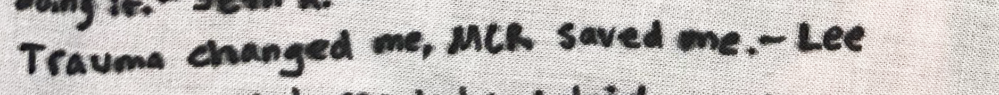
Trauma changed me, MCR saved me. -Lee
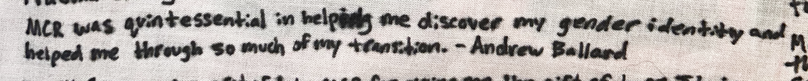
MCR was quintessential in helping me discover my gender identity and helped me through so much of my transition. -Andrew Ballard
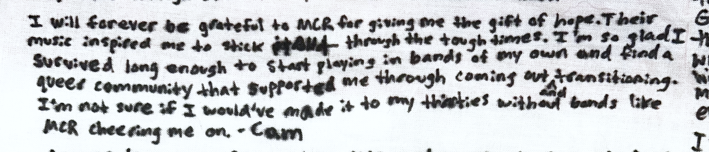
I will forever be grateful to MCR for giving me the gift of hope. Their music inspired me to stick through the tough times. I'm so glad I survived long enough to start playing in bands of my own and find a queer community that supported me through coming out and transitioning. I'm not sure I would've made it to my thirties without bands like MCR cheering me on. -Cam
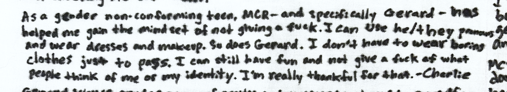
As a gender non-conforming teen, MCR - and specifically Gerard - has helped me gain the mindset of not giving a fuck. I can use he/they pronouns and wear dresses and makeup. So does Gerard. I don't have to wear boring clothes just to pass. I can still have fun and not give a fuck of what people think of me or my identity. I'm really thankful for that. -Charlie
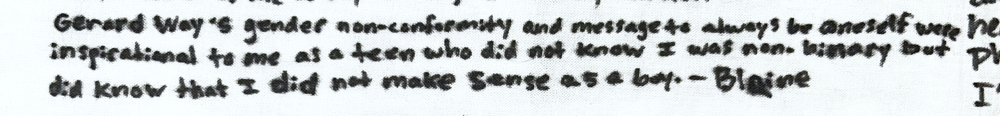
Gerard Way's gender non-conformity and message to always be oneself were inspirational to me as a teen who did not know I was non-binary but did know that I did not make sense as a boy. -Blaine
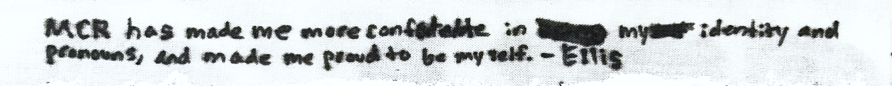
MCR has made me more comfortable in my identity and pronouns, and made me proud to be myself. -Ellis
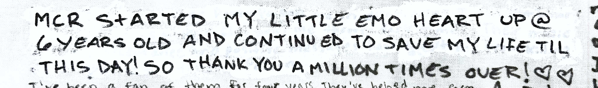
MCR started my little emo heart up @ 6 years old and continued to save my life til this day! So thank you a million times over! <3 <3
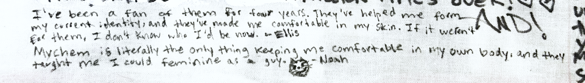
[MISSING TEXT HERE]
My Chem is literally the only thing keeping me comfortable in my own body, and they taught me I could be feminine as a guy. 😼 -Noah
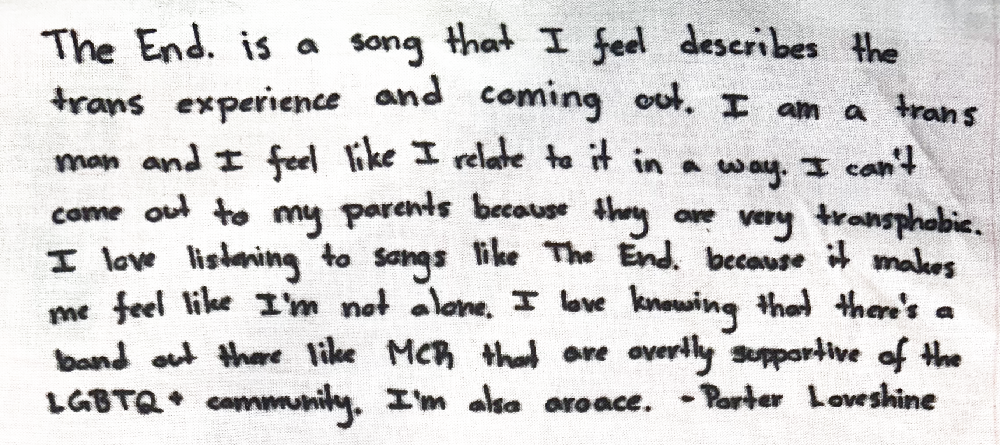
The End. is a song that I feel describes the trans experience and coming out. I am a trans man and I feel like I relate to it in a way. I can't come out to my parents because they are very transphobic. I love listening to songs like The End. because it makes me feel like I'm not alone. I love knowing that there's a band out there like MCR that are overtly supportive of the LGBTQ+ community. I'm also aroace. -Porter Loveshine
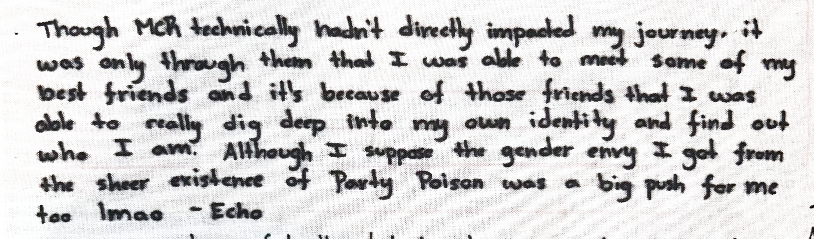
Though MCR technically hadn’t directly impacted my journey, it was only through them that I was able to meet some of my best friends and it’s because of those friends that I was able to really dig deep into my own identity and find out who I am. Although I suppose the gender envy I got from the sheer existence of Party Poison was a big push too lmao. -Echo
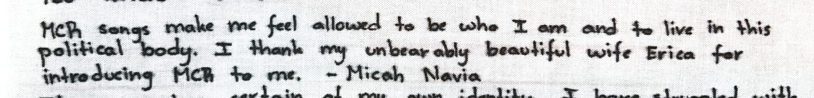
MCR songs make me feel allowed to be who I am and to live in this political body. I thank my unbearably beautiful wife Erica for introducing MCR to me. -Micah Navia
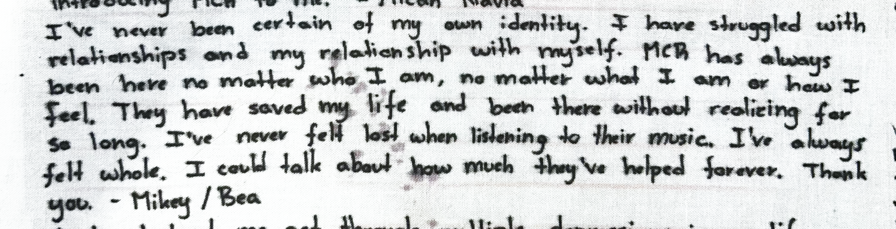
I've never been certain of my own identity. I have struggled with relationships and my relationship with myself. MCR has always been here no matter who I am, no matter what I am or how I feel. They have saved my life and been there without realizing for so long. I've never felt lost when listening to their music. I've always felt whole. I could talk about how much they've helped forever. Thank you. -Mikey / Bea
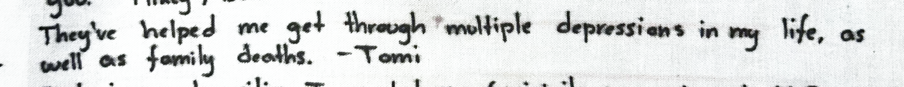
They've helped me get through multiple depressions in my life, as well as family deaths. -Tomi
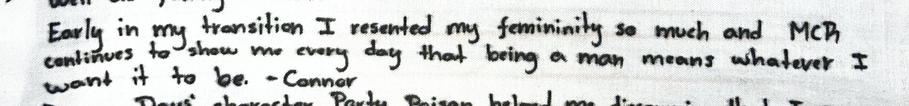
Early in my transition I resented my femininity so much and MCR continues to show me every day that being a man means whatever I want it to be. -Connor
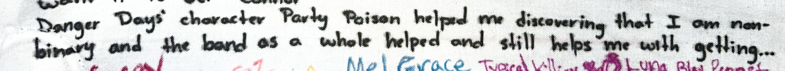
Danger Days' character Party Poison helped me discovering that I am nonbinary and the band as a whole helped and still helps me with getting through dark times. Their music and the acceptance and positive messages that they convey have kept me from killing myself quite a few times. -Poison
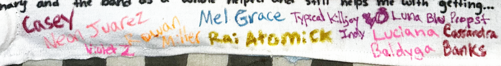
Casey (my brother)
Neon Juarez
Violet Z
Rowan Miller
Mel Grace
Rai Atomick
Typical Killjoy Indy, Luna Blu Propst
Luciana Baldyga
Cassandra Banks
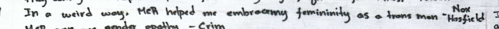
In a weird way, MCR helped me embrace my femininity as a trans man. -Nox Hosfield
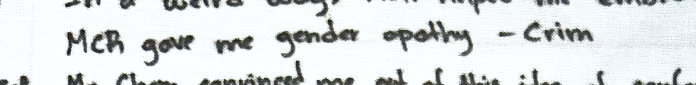
MCR gave me gender apathy -Crim
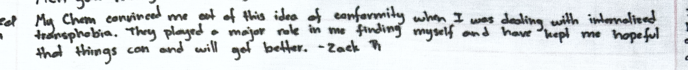
My Chem convinced me out of this idea of conformity when I was dealing with internalized transphobia. They played a major role in me finding myself and have kept me hopeful that things can and will get better. -Zack R
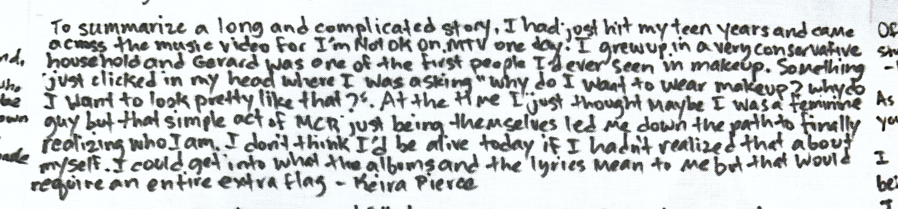
To summarize a far more long and complicated story, I had just hit my teen years and came across the music video for I'm Not Okay on MTV one day. I grew up in a very conservative household and Gerard was one of the first people I'd ever seen in makeup. Something just clicked in my head where I was asking "why do I want to wear makeup? why do I want to look... pretty like that?". At the time I just thought maybe I was a feminine guy but that simple act of MCR just being themselves lead me down the path to finally realizing who I am. I don't think I'd be alive today if I hadn't realized that about myself. I could get into what the albums and the lyrics mean to me but that would require an entire extra flag -Keira Pierce
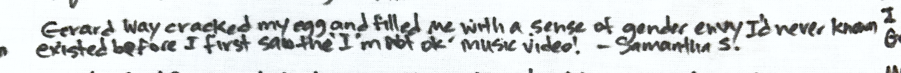
Gerard Way cracked my egg and filled me with a sense of gender envy I’d never known existed before I first saw the 'I’m Not Okay' music video! -Samantha S
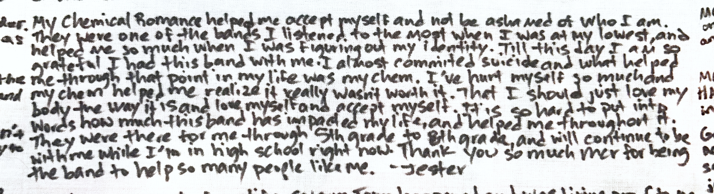
My chemical romance helped me accept myself and not be ashamed of who I am.They were one of the bands I listened to the most when I was at my lowest, and helped me so much when I was figuring out my identity. Till this day I still am so grateful I had this band with me, I almost committed suicide and what helped through that point in my life was my chem. I've hurt myself so much and my chem helped me realise it really wasn't worth it. That I should just love my body the way it is and love myself and accept myself. It is so hard to put into words how much this band has impacted my life, and helped me throughout it. They were there for me through 5th grade to 8th grade, and will continue to be with me while I'm in high school right now. Thank you so much mcr for being the band to help so many people like me. -Jester
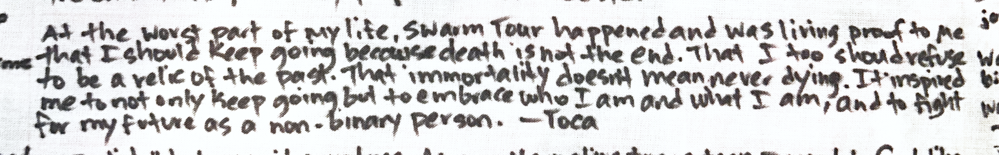
At the worst part of my life, Swarm Tour happened and was living proof to me that I should keep going because death is not the end. That I too should refuse to be a relic of the past. That immorality doesn’t mean never dying. It inspired me to not only keep going but to embrace who and what I am, and to fight for my future as a non binary person. -Toca
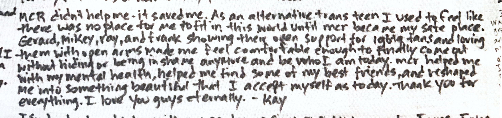
MCR didn’t just help me - it saved me. As an alternative trans teen I used to feel like there was no place for me to fit in in this world until mcr became my safe place. Gerard, Mikey, Ray and Frank showing their open support for lgbtq fans and loving them with open arms made me feel comfortable enough to finally come out without hiding or being in shame anymore and be who I am today. Mcr helped me with my mental health, helped me find some of my best friends and reshaped me into something beautiful that I accept myself as today. Thank you for everything, I love you guys eternally. -Kay
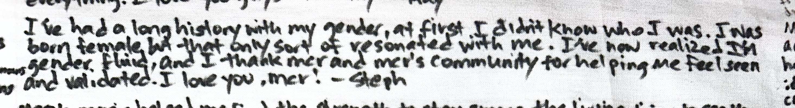
I've had a long history with my gender, at first I didn't know who I was. I was born female but that only sort of resonated with me. I've now realized that I'm genderfluid, and I thank MCR and MCR's community for helping me feel seen and validated. I love you MCR! -Steph
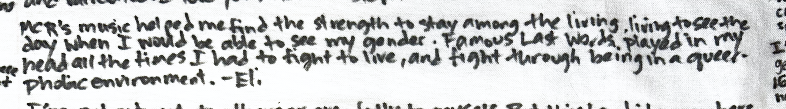
MCR's music helped me find the strength to stay among the living, living to see the day when I would be able to understand my gender. Famous Last Words played in my head all the times I had to fight to live, and get through being in a queerphobic environment. -Eli
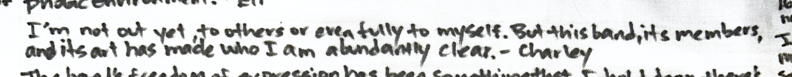
I’m not out yet, to others or even fully to myself. But this band, its members, and its art has made who I am abundantly clear. -Charley
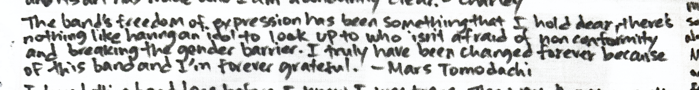
The band's freedom of expression has always been something that I hold dear, there’s nothing like having an idol to look up too who isn’t afraid of nonconformity and breaking the gender barrier. I truly have been changed forever because of this band, and I’m forever grateful. -Mars Tomodachi
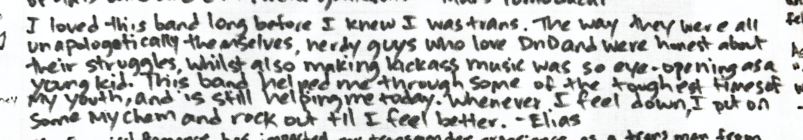
I’ve loved this band long before I knew I was trans. The way they all were unapologetically themselves, nerdy guys who love DnD and were honest about their struggles, whilst also making kickass music was so eye opening as a young kid. This band helped me through some of the toughest times of my youth, and is still helping me today. Whenever I feel down I put on some My chem and rock out til I feel better. -Elias
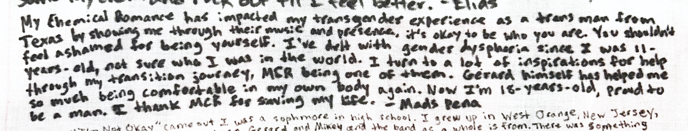
My Chemical Romance has impacted my transgender experience as a transgender man from Texas by showing me through their music and their presence, it's okay to be who you are. You shouldn't feel ashamed for being yourself. I've dealt with gender dysphoria since I was 11 years old, not sure who I was in this world. I turn to a lot of inspirations for help through my transition journey, My Chemical Romance being one of them. Gerard himself has helped me so much being comfortable in my own body again. Now I'm 18 years old, proud to be a man. I thank MCR for saving my life. -Mads Pena
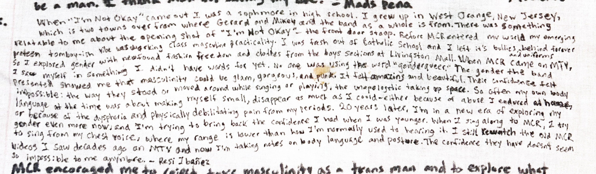
When “I’m Not Okay” came out, I was a sophomore in high school. I grew up in West Orange, New Jersey, which is two towns over from where Gerard and Mikey are from, and from where the band as a whole is from. There was something relatable to me about the opening scene of the video for I’m Not Okay - the front door stoop. Before MCR entered my world, my emerging preteen tomboyish vibe was working class masculine practicality. I was fresh out of catholic school and I left its bullies and uniforms behind forever. So I explored gender with newfound fashion freedom and clothes from the boys section from stores at the Livingston Mall. But when MCR came on MTV, I saw myself in something I didn’t have words for yet. No one was using the word “genderqueer.” The gender the band presented showed me that masculinity could be glam, could be gorgeous, and it could also be punk. It felt amazing and beautiful. And their confidence felt impossible : the way they stood or moved around while singing or playing, the unapologetic taking up space. Because so often my own body language at the time was about trying to make myself small, to disappear as much as I could - either because of the abuse I faced at home, or because of the physical debilitating pain and dysphoria from my periods. Twenty years later, I’m in a new era of exploring my gender even more now, and I’m trying to bring back the confidence I had when I was younger. When I sing along to MCR, I try to sing from my chest voice, where my range is lower than how I’m normally used to hearing it. I still rewatch the old MCR videos, that I saw on MTV decades ago - and now I’m taking notes on body language and posture. The confidence they have doesn’t seem so impossible to me anymore. -Resi Ibañez
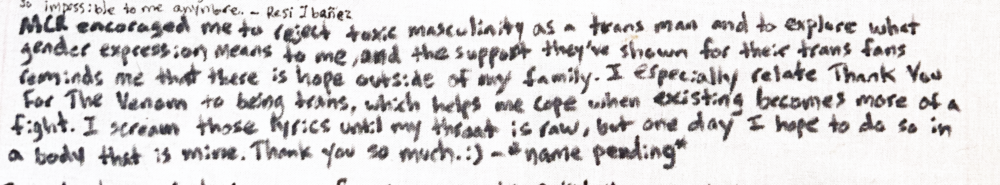
MCR encouraged me to reject toxic masculinity as a trans man and to explore what gender expression really means to me, and the support they’ve shown for their trans fans reminds me that there is hope outside of my family. I especially relate Thank You For The Venom to being trans, which helps me cope when existing becomes more of a fight. I scream those lyrics until my throat is raw, but one day I hope to do it in a body that is mine. Thank you so much :) -*name pending*
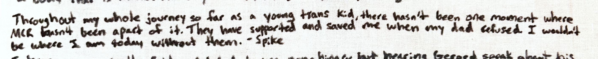
Through out my whole journey so far as a young trans kid, there hasnt been one moment where MCR hasnt been apart of it. They have supported and saved me when my dad refused. I wouldnt be where I am without them. -Spike
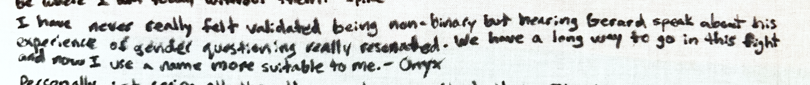
I have never really felt validated being non-binary but hearing Gerard speak about his experience of gender questioning really reasonated. We have a long way to go in this fight and now I use a name more suitable to me. -Onyx Rist
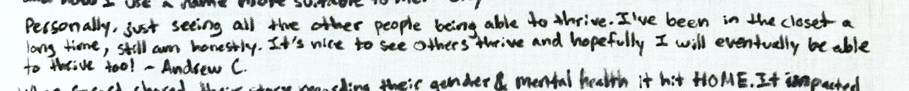
Personally, just seeing all the other people able to thrive. I've been in the closet a long time, still am honestly. But it's nice to see others able to thrive and hopefully I will eventually will be able too thrive too! -Andrew C.
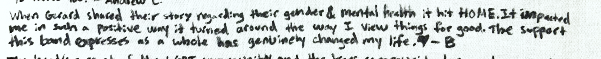
When Gerard shared their story regarding their gender & mental health, it hit HOME. It impacted me in such a positive way it turned around the way I view things for good. The support this band expresses as a whole has genuinely changed my life. 🖤 -B
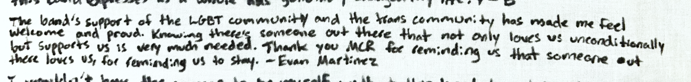
The band’s support of the LGBT community and the trans community has made me feel welcome and proud. Knowing that there’s someone out there that not only loves us unconditionally but supports us is very much needed. Thank you MCR for reminding us that someone out there loves us, for reminding us to stay. -Evan Martinez
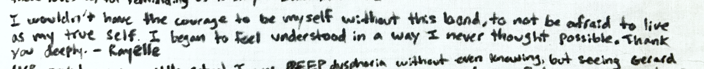
I wouldn't have the courage to be myself without this band, to not be afraid to live as my true self. I began to feel understood in a way I never thought possible. Thank you deeply. -Rayelle
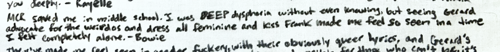
MCR saved me in middle school. I was in DEEP dysphoria without even knowing, but seeing Gerard advocate for the weirdos and dress all feminine and kiss Frank made me feel so seen in a time I felt completely alone. -Bowie
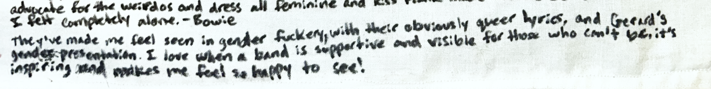
They’ve made me feel seen in gender fuckery with their obviously queer lyrics and Gerard’s gender presentation. I love when a band is supportive and visible for those who can’t be, it’s inspiring and makes me so happy to see!
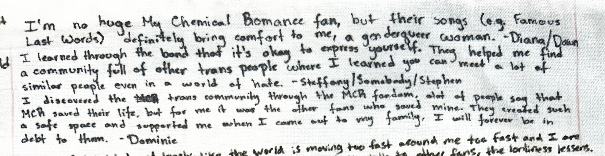
I'm no huge My Chemical Romance fan, but their songs (e.g. Famous Last Words) definitely bring comfort to me, a genderqueer woman. -Diana/Dawn
I learned through the band that it’s okay to express yourself. They helped me find a community full of other trans people where I learned you can meet a lot of similar people even in a world of hate. -Steffany/Somebody/Stephen
I discovered the trans community through the mcr fandom, alot of people say that mcr saved their life, but for me it was the other fans who saved mine. They created such a safe space and supported me when I came out to my family, I will forever be in debt to them. -Dominic
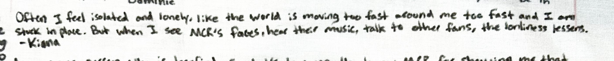
Often I feel isolated and lonely, like the world is moving around me too fast and I am stuck in place. But when I see MCR's faces, hear their music, talk to other fans, the loneliness lessens. -Kiana
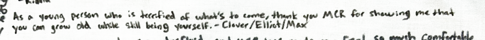
As a young trans person who is terrified of what’s to come, thank you MCR for showing me that you can grow old while still being yourself. -Clover/Elliott/Max
I have recently came out as genderfluid, and My chemical romance has made me feel so much more comfortable being myself and my identity, I feel more comfortable in my body if you know what I mean?? They’ve basically showed me that it’s okay to change erratically, especially with Gerard’s awesome outfit choices. -Mar
MCR inspired me to be who I am and to never give up. To me, they are not just a band, but one of the most important parts of my life. I’ll forever be grateful they taught me to love and express myself. -Kyle
MCR has made me feel safe and included. -Virgil
MCR has led me to be very comfortable in what I wear. As a trans man I always feel like I HAVE to wear masculine things and I was never comfortable in my own body untill I got big into mcr and the fandom. -Lawrence
Gerard Way’s on stage gender expression and his nonconformity helped me self actualise in my masculinity. It doesn’t matter how I may present, I am who I say I am. And MCR’s music has been my number one support as I go on this journey of self discovery. <3 -AJ Platt
Watching and listening to Gerard’s stories and life experiences have always been a big inspiration to me. He is very gender envy to me. And Danger Days itself and working on using the canon to help tell the stories I want to tell is so empowering. -Mads
I figured out I was trans at 13, but for a while identified as non-binary because I couldn't understand why I still wanted to have long hair, painted nails and wear eyeliner if I wanted to look like man. Last year right before I was given the green light to start testosterone, I went to the concert in Stockholm. Seeing Frank, Ray, Gerard with long hair and being confident about it, I had the revelation that maybe I don't need short hair to be taken seriously as a man. The night before I went to my gender clinic appointment, I had a very emotional talk with my mum (my biggest supporter) about starting testosterone. I wasn't 100% convinced it would be the right decision for me (it was), but explained to my mum I wanted to look like "that" (pulling out pictures of the band's Revenge era with long-ish hair and makeup) without having severe gender dysphoria. Which helped her understand me and what I wanted out of my transition. After going on T, my gender dysphoria isn't as intense, but the main reason I'm confident being a gender non-conforming trans man is due to MCR. I finally know I don't need short hair or to never use makeup to be a man. I can paint my nails and that doesn't make me less of a man. -Zero
Mcr has taught me to be strong and to never let the hate in the world take the light behind my eyes. -Gee
MCR and the MCRmy have helped me embrace and love the parts of me that aren’t typical or expected and I will always love this community for that. My Chemical Romance since the beginning have used their platform to smash gender norms and speak out about topics like queer identity, misogyny, bullying, and being gender nonconforming. This family we’ve created together is brash and visible and unapologetically different, and it feels like a safe place for me to be as uncommon and weird as I want to be. -Brinn Spencer
I’ve been an MCR fan since 2005 at the earliest I can remember finding my gender identity MCR has been there for me while I find my own self. I’ve seen MCR 16 times and the final show of the last tour my name and gender was legally changed to my name and I got the F marker day of the final MCR show 🤍 -Lydia Carpenter
I would have these fears that if I transitioned I would become like all the bad men around me, that I had to sacrifice the showy/flamboyant parts of myself so I could be accepted and pass as cis. Mcr made me feel safe and like I wasn’t alone with what I felt. They gave me a reason to keep fighting. -Will
MCR's 2022 tour helped me realize that I was nonbinary! Gerard's non-conforming outfits and advocacy made me realize that I didn't have to just be one gender or the other. I've felt more comfortable in my skin ever since :) -Anya
As I've grown to love MCR, I do have a lot of my social media with my name as “the killjoy”, I am non-binary and Gerard has made me feel way more comfortable with my masculinity and more confident about not caring what others may think about me. -Emily/Em